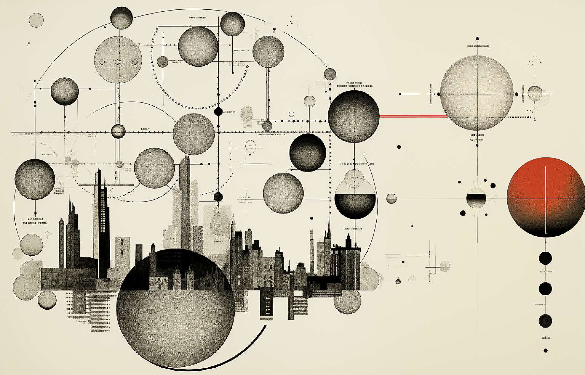
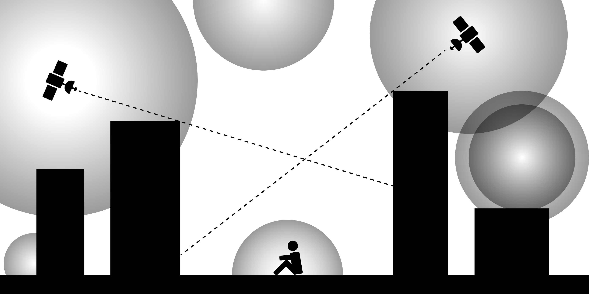

Wi-Fi 開源儀式
Capturing and sharing the overflow of Wi-Fi signals in urban areas
我們支持減少數位差距和提高Wi-Fi進入數位空間的平等性。
我們提出一項新的方式：在城市中捕捉和共享溢出的Wi-Fi信號，讓那些在數位世界邊緣徘徊的人可以更容易進入數位空間。
讓Wi-Fi成為一種公共資源，如同空氣和水一樣自由、平等地被所有人使用。

-
WI-FI 儀式圖

WI-FI 概念圖

使用方式
開源模組